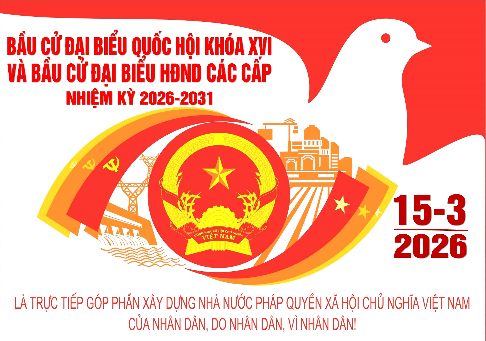
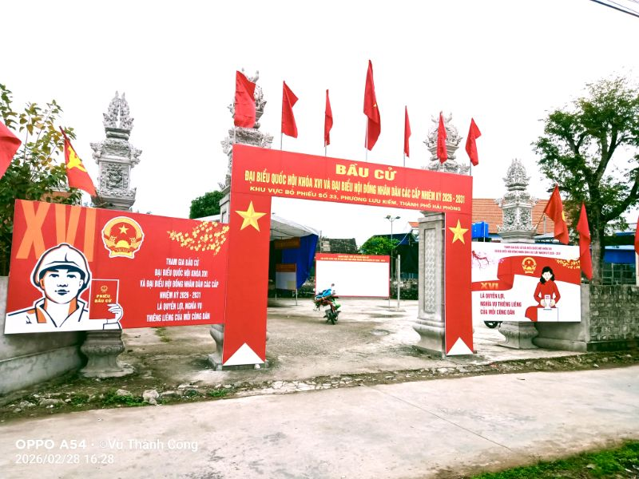

Bầu cử nhiệm kỳ 2026 - 2031
🏠Bài viết
Cuộc bầu cử đại biểu Quốc hội khóa XVI và đại biểu Hội đồng nhân dân các cấp nhiệm kỳ 2026 – 2031 là sự kiện chính trị trọng đại của đất nước, là ngày hội lớn của toàn dân. Đây không chỉ là quyền mà còn là nghĩa vụ thiêng liêng của mỗi công dân trong việc tham gia xây dựng Nhà nước pháp quyền xã hội chủ nghĩa của Nhân dân, do Nhân dân và vì Nhân dân.
Bầu cử không chỉ là một ngày hội, mà còn là một quá trình lựa chọn mang tính chiến lược. Trên tinh thần đó, mỗi cán bộ, đảng viên, mỗi công dân hãy phát huy cao nhất ý thức trách nhiệm, tham gia bầu cử đầy đủ, đúng pháp luật; đồng thời tích cực tuyên truyền, vận động gia đình và cộng đồng cùng thực hiện quyền và nghĩa vụ của mình.

Ban Tuyên giáo và Dân vận Trung ương phối hợp với Đảng ủy Quốc hội tổ chức Cuộc thi trực tuyến tìm hiểu bầu cử Quốc hội và Hội đồng nhân dân các cấp trên Trang Thông tin điện tử tổng hợp Báo cáo viên
Ngày 15/3/2026, cử tri cả nước sẽ tham gia bầu cử đại biểu Quốc hội khóa XVI và đại biểu Hội đồng nhân dân các cấp nhiệm kỳ 2026–2031. Đây không chỉ là một mốc chính trị quan trọng theo Hiến pháp và pháp luật, mà còn là thời điểm mở đầu cho một chu kỳ quản trị mới của đất nước trong bối cảnh yêu cầu cải cách thể chế, nâng cao năng lực thực thi và tăng tốc phát triển đang đặt ra ngày càng cấp thiết.
(Nguồn: https://bantuyengiaovadanvan.haiphong.dcs.vn)
Gồm các tổ dân phố: 1 Thụ Khê, 2 Thụ Khê, 3 Mai Động, 4 Mai Động, 5 Mai Động, 6 Điệu Tú, 7 Quỳ Khê, 8 Thiểm Khê, 9 Thiểm Khê, 10 Thiểm Khê, 11 Thiểm Khê
1.1. Tổ bầu cử số 30Địa điểm tổ chức bỏ phiếu tại: Nhà văn hóa Tổ dân phố 1 Thụ Khê, phường Lưu Kiếm
1.3. Tổ bầu cử số 32
Địa điểm tổ chức bỏ phiếu tại: Đền Thờ Đức Thánh Trần Hưng Đạo, Tổ dân phố 3 Mai Động, phường Lưu Kiếm
1.8. Tổ bầu cử số 37
Địa điểm tổ chức bỏ phiếu tại: Nhà văn hóa Ủy ban nhân dân xã Liên Khê cũ (Tổ dân phố 8 Thiểm Khê, phường Lưu Kiếm)


Tin tức – hoạt động
Thư viện hình ảnh



